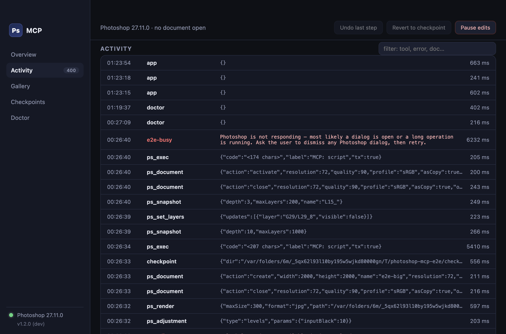

Photoshop · MCP
Your AI agent can see.
Now it can edit.
Free macOS app · open source
Photoshop
MCP
MCP
Connects Claude, Cursor or Codex to the Photoshop already running on your Mac.
No NodeNo pluginNo account


Connect
once.
once.
The app bundles the server. Press Connect next to your client and you're done.
Claude Code
Claude Desktop
Cursor
Codex CLI

Watch every edit.
Every tool call, live. Renders it looked at. Files it exported.
00:01ps_render
00:03ps_selection subject
00:04ps_adjustment curves
00:06ps_mask add
00:09ps_document save
Real work, non-destructively.
RawGraded by the agent
RawSelect Subject + Hue/Sat
Adjustment layers · AI Select Subject · masks · sRGB export — every step one undo, rolled back on failure.
Built so you can leave it running.
1
Checkpoint before the first edit
History snapshot + a layered copy of unsaved work on disk.
2
Your files stay yours
Overwriting or discarding needs your explicit OK.
3
One undo per step
Undo the agent's last step. Revert to the checkpoint.
Kill switch
Pause edits
0
end-to-end checks against a live Photoshop
Download for Mac
kathandesai.com/photoshop-mcp
github.com/kathan3009/photoshop-mcp
Free · MIT · Apple silicon & Intel